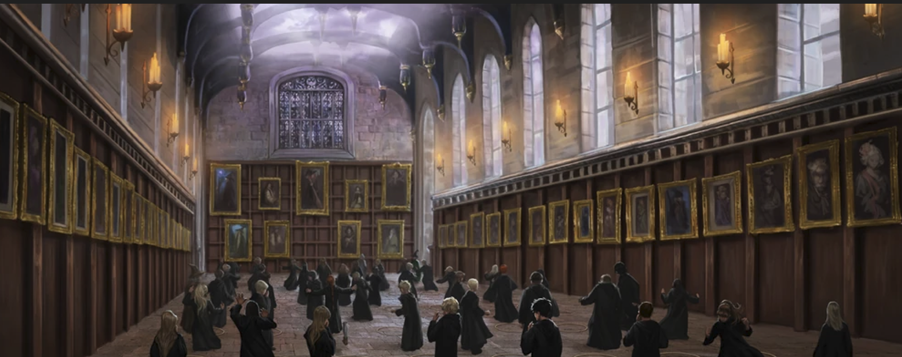

Astronomy
Charms
Dark Arts (1997-1998 SY only)
Defense Against the Dark Arts (discontinued for the 1997-1998 SY)
Flying (Required for 1st years, optional for higher years)
Herbology
History of Magic
Muggle Studies (1997-1998 SY students only)
Potions
Transfiguration

The Elective Subjects
Third year on:
Arithmancy
Care of Magical Creatures
Divination
Muggle Studies
Study of Ancient Runes
Sixth and Seventh year (with sufficient demand):
Advanced Arithmancy Studies
Alchemy
Ancient Studies
Apparition